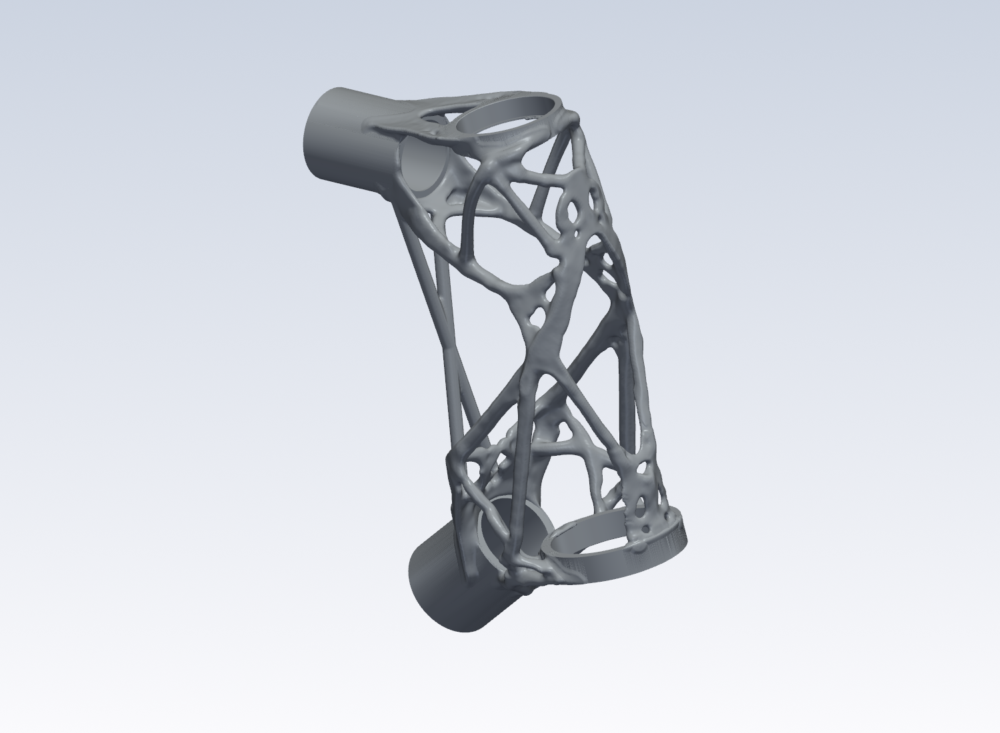
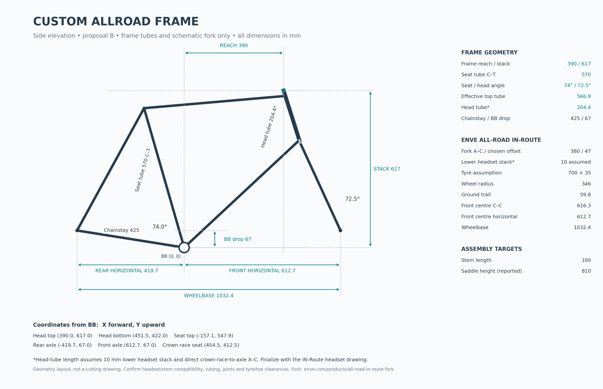
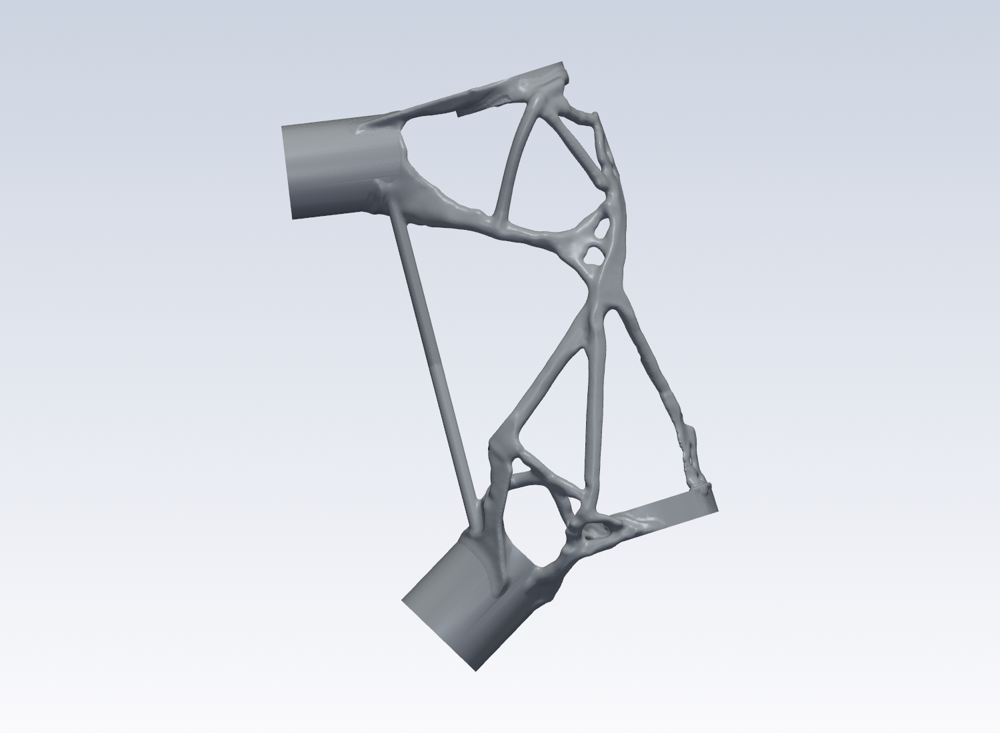

Claude Code
RecommendedInstall uv first, then run:
claude plugin marketplace add chartergroup/topopt-demo#v0.1.0
claude plugin install topopt@topopt-demoStart claude in a work folder and type /topopt:start-here.
Agent First Generative Design
Start from text, a sketch, or a CAD design, then let your agent work through the loads and constraints and run a generative design on your own computer.
topopt is open source and works with your preferred AI agent.

Get started
Install the plugin, describe your part, and let your agent guide you through the design.
Install uv first, then run:
claude plugin marketplace add chartergroup/topopt-demo#v0.1.0
claude plugin install topopt@topopt-demoStart claude in a work folder and type /topopt:start-here.
uv run --no-project --python 3.12 packaging/mcpb/build.pyBuild the extension from a checkout; open the resulting .mcpb file.
git clone https://github.com/chartergroup/topopt-demoOpen the checkout in Cursor; it includes the MCP configuration.
git clone https://github.com/chartergroup/topopt-demoStart Codex in the checkout and trust the project.
scripts/topopt-env.sh mcpAdd the server configuration from the full steps, then use agent mode.
scripts/topopt-env.sh mcpAdd the MCP configuration from the full steps and start Gemini in the checkout.
Workflow
Simply describe or share your design with the agent, and it will help define the correct conditions for your optimization.
“I’m building a carbon and steel all-road bike with 3D-printed lugs. It would be dope if the headtube lug were topology optimized.”

Bring a sketch, a description, or existing geometry. Your agent helps establish the loads, interfaces, keep-outs, and material assumptions.
Intelligent time and memory estimates help your agent select a mesh that fits your problem and your computer.
Follow along with the design, inspect the results, and get a print-ready STL file.
Local computation
MCP gives your agent access to the engineering tools. In Claude Code, a team of specialized subagents handles design, CAD, FEA, and printability.
Available memory and solver estimates guide the setup. The original head-lug workflow ran on an M1 MacBook Air with 16 GB of RAM.
The numerical solver runs locally without model calls. Your agent’s conversations and tool use follow your AI provider’s pricing.
Example Project: Bicycle Headtube
We wanted to build a custom bicycle with topology-optimized lugs and carbon tubes. Here’s how we built the headtube.

Our repo allowed us to define the loads and keep-outs, preserve the headset and tube interfaces, and optimize the headtube’s weight on a laptop.
We inspected the resulting geometry and prepared the manufacturing files for the steel headtube.
Examples
The repo comes with several simple, reproducible samples so you can try generative design for yourself.
The optimized hook uses 69% less mass than the starting design.
Browse sample files on GitHub ↗A few practical things
You can begin with a description and work with your agent to create the setup. Review the dimensions, loads, supports, and assumptions before running it. Existing STL regions and YAML inputs are another route.
The numerical optimization and browser dashboard run on your computer. The AI agent is separate and may send prompts or tool results to its model provider.
The workflow accepts material properties and exports STL geometry. Select the properties and allowables for your material and process, then inspect walls, supports, powder access, interfaces, and finishing requirements with your manufacturing provider.
You receive a smooth STL, run metrics, and printability findings. Optional tools check the finished mesh’s stress and other constraints. Manufacturing readiness depends on the checks completed for the particular part.